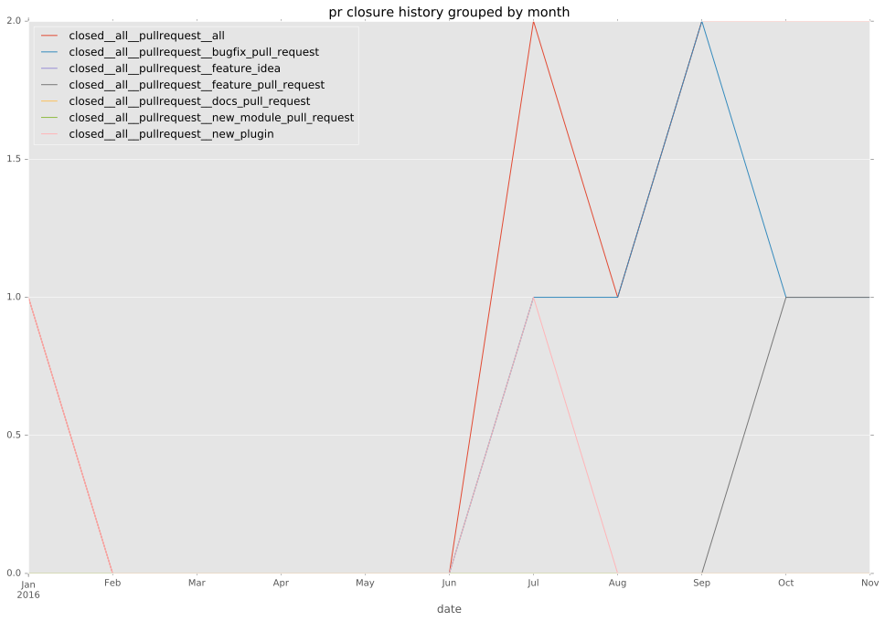
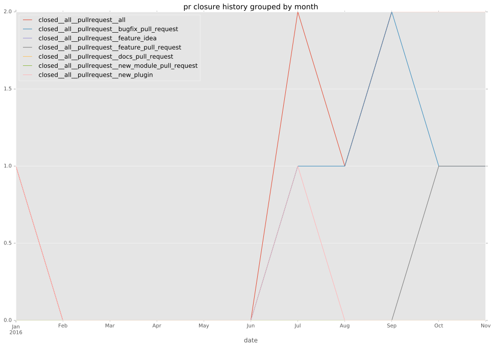

authors
- privateip
maintainers
- privateip
- gundalow
contributors
- privateip : 53 commits
- Qalthos : 9 commits
- gundalow : 4 commits
- bordeltabernacle : 2 commits
total issue counts
bugfix pull request: 6
pullrequest: 8
issue: 4
new plugin: 2
bug report: 4
issue history
pullrequest history
 

days open by issue type
all
count: 19
std: 12.2763024702
min: 0
max: 37
median: 0.0
mean: 5.47368421053
pullrequest
count: 0
std: nan
min: nan
max: nan
median: nan
mean: nan
bugfix pull request
count: 12
std: 0.778498944162
min: 0
max: 2
median: 0.0
mean: 0.333333333333
issue
count: 0
std: nan
min: nan
max: nan
median: nan
mean: nan
new plugin
count: 3
std: 20.2072594216
min: 0
max: 35
median: 0.0
mean: 11.6666666667
bug report
count: 4
std: 18.1911150474
min: 0
max: 37
median: 14.0
mean: 16.25
closures grouped by total days open